Dynamic Landscapes in Open Source GIS
Center for Geospatial Analytics
Helena Mitasova, Anna Petrasova, Vaclav Petras, Brendan Harmon

Maps go digital with GRASS
Year 1987: Let William Shatner do the introduction
Motivation for geovisualization
- Earth systems monitoring: massive data collected
- Geospatial analytics: identify trends, patterns, vulnerabilities
- Modeling and simulations: predict impacts
- Planning and decision making
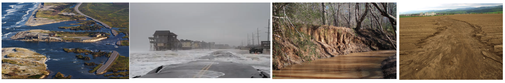
Dynamic landscapes in GRASS
First open source GIS with dynamic landscape support:
hydrologic and erosion modeling
1983: GRASS started at USACERL
1993: Dynamic Surfaces: GRASS4.1 SG3d
2014: GRASS7 - new generation tools for dynamic landscapes
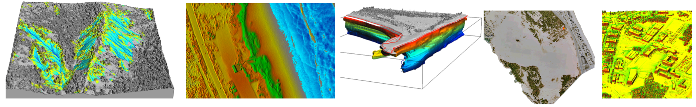
Overland water flow: Balsam mountain, NC
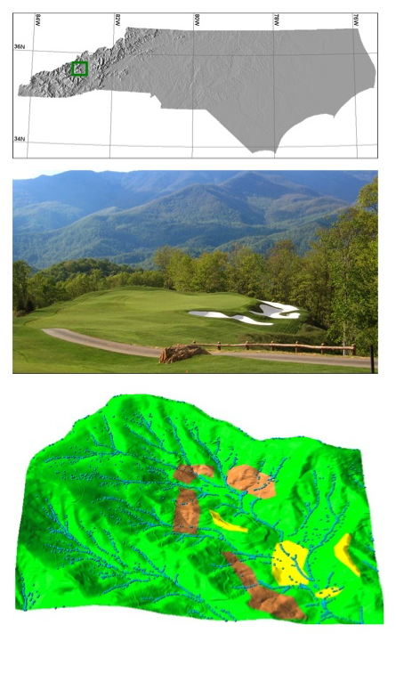

Path sampling method for solving the flow continuity equations

Groundwater pollution plume
10 years of well monitoring data: 3D well locations
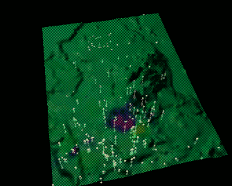
Groundwater pollution plume
Dynamic volume from 10 years of well monitoring data

Current research and education examples
- Mountain top mining: Keyford mine, West Virginia
- Erosion modeling: Yakima, WA training grounds
- Solar radiation and cast shadows: NCSU Centennial Campus
- Tangible landscapes
- Coastal sand dune management: Jockey's Ridge, NC
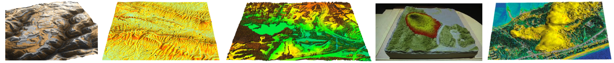
Mountain top mining
Student project in Multidimensional Geospatial modeling course: Ryan Thomson
Kayford mountain, WV: impacts of anthropogenic topographic change
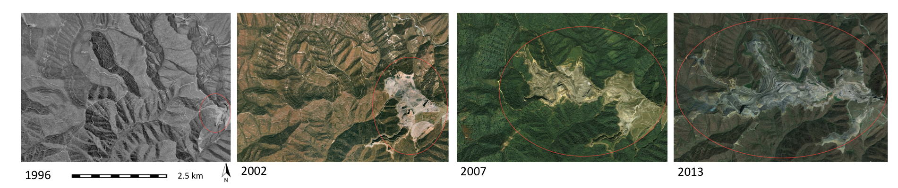
Interactive mountain top mining
Google Earth view does not provide sufficient 3D resolution to analyze the topographic features
Students use the T&V facility to visualize high resolution lidar-based DEM of the mine
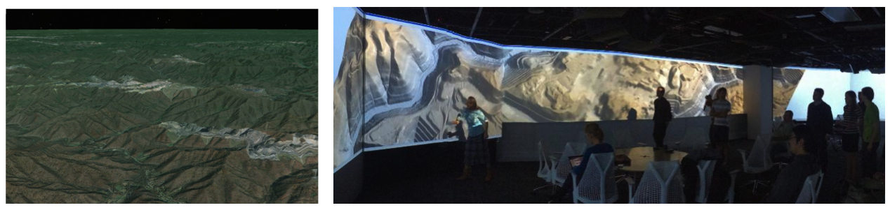
Yakima training grounds: Erosion modeling
Project to identify areas vulnerable to high erosion, prioritize conservation and erosion mitigation resources
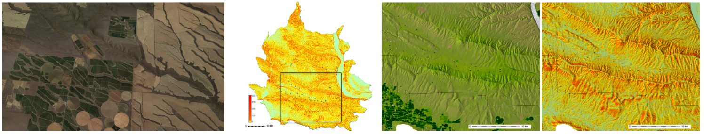
Interactive Yakima: Sediment transport capacity

Centennial Campus
3D data acquired by lidar in 2001 and 2013, used as study area for several courses
Lidar data processing, surface runoff assessment, trails planning

Centennial Campus
Solar radiation modeling: winter and summer solstice dynamics


Centennial Campus
Fire spread modeling using fuel estimates from lidar data and with a fire break:


Interactive Centennial Campus
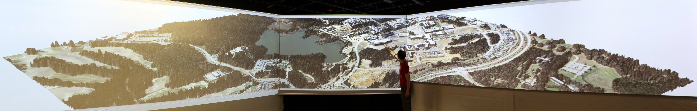
Jockey's Ridge sand dunes
Active dune system within fixed state park boundaries
What is the rate of migration? Is there loss of sand?

Jockey's Ridge evolution
How does the landform change? How to save it?
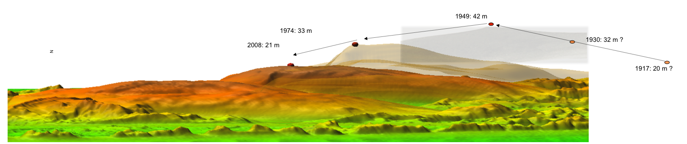
Jockey's Ridge migration 1974 - 2008


Jockey's Ridge 16m, 18m, 20m contour evolution isosurfaces
 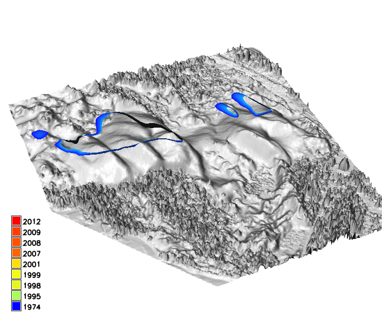
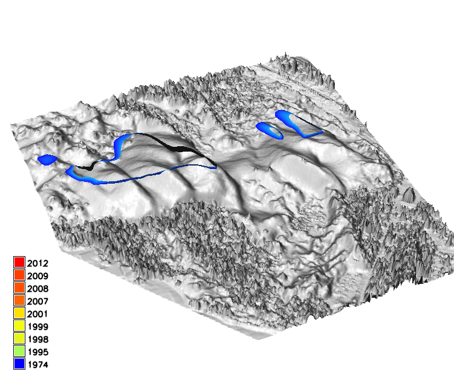 
Interactive Jockey's Ridge
Park management: focus on preserving processes rather than features - active dunes as living landscape


Tangible landscape